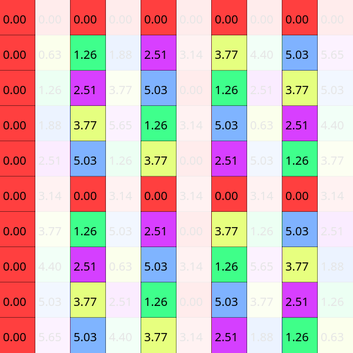
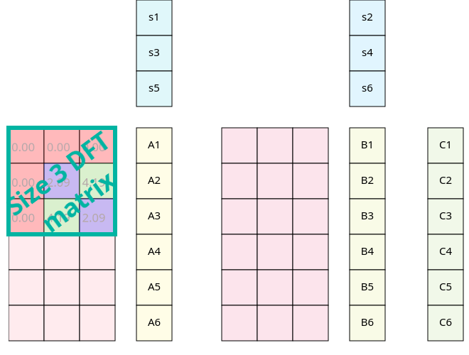
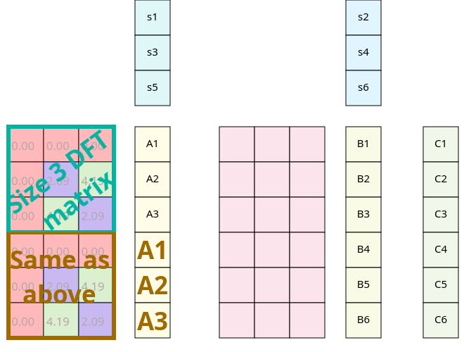
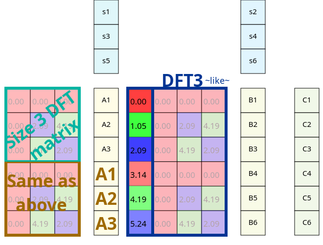
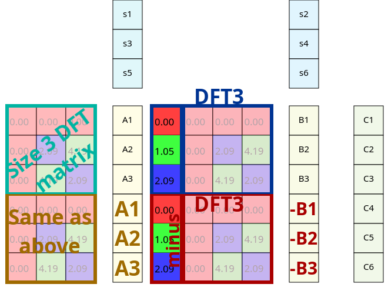
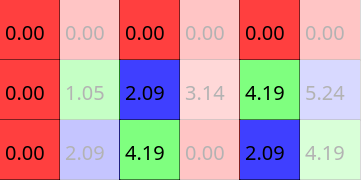
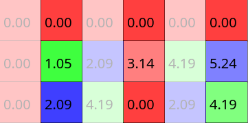
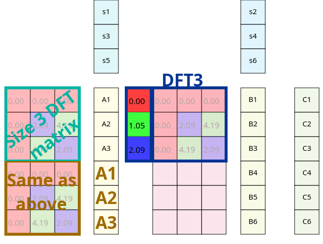
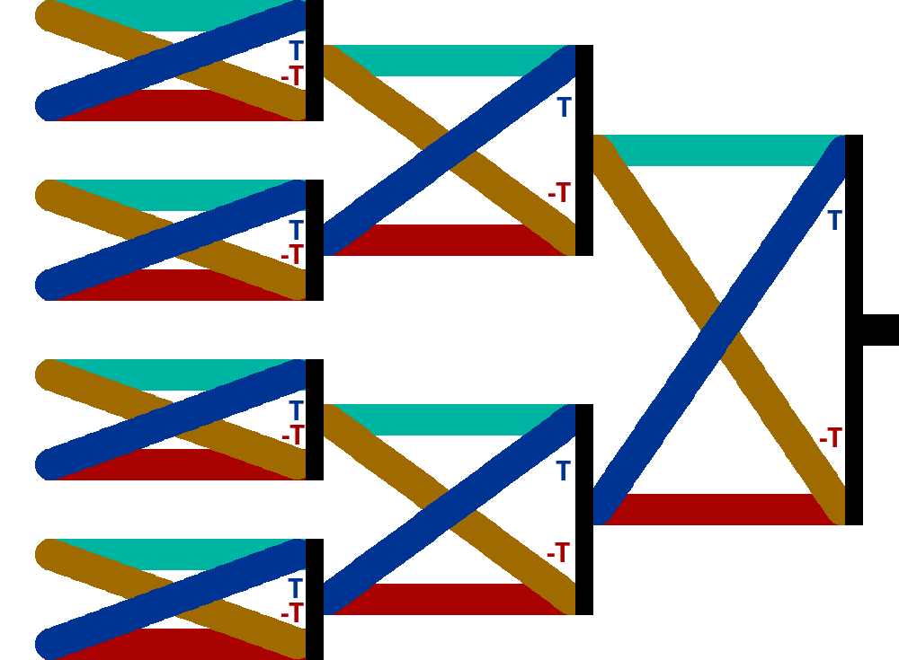
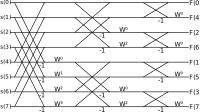

{{ title }}
In the previous part, we showed how we could build signals from sinusoids, and how to analyse built signals to get their components back. Inverting the matrix using Gaussian elimination showed to be really slow bu we could accelerate that using the easily invertible DFT matrix. Much faster, right? Multiplying an n by n matrix with an n long vector is an O(n^2) operation. With a 1 second long signal and a sample rate of 44100 Hz, that still means 1 944 810 000, almost two billion steps.
Going faster
Take a look at the DFT matrix defined before. Now instead of the powers of W, the angles in radians will be shown for each element.
Complex functions are often plotted with domain coloring but this is not the case now. From zero to π, the whole range of hues are covered with a bright saturation. From π to 2π (with π included but 2π aka 0 is not) the same range is covered buth with a slightly lower saturation. As result, points at the opposite side of the circle will share the same hue and they'll only differ in saturation.
With this way of coloring, you might notice some sort of symmetry in the DFT matrices. For example for even cases they are made up from four similarly colored parts. But the symmetry we are going to exploit is a bit more subtle, so we need to cover some elements first.
If we cover or ignore each even column, the remaining elements will show symmetry vertically, top and bottom is identical which means that the submatrix from the top five rows will be exactly the same as the bottom five rows in this size 10 DFT case.
Alternatively we can cover each odd column as well. In that case the symmetry is a bit weaker, the elements at top and bottom will be shown with the opposite color of the colorwheel, bright colors turn into dull ones and vice versa. You might also say that the difference of their angles is π.
When we are applying the Discrete Fourier Transform to a signal, we multiply it with the DFT matrix. For this purpose we can split this matrix into two smaller ones. The original multiplication with a size six DFT matrix:
The amplitude was marked with C, so we could use A and B after splitting (C is the sum of A and B):
What did we gain from that? Nothing, as matrix multiplication is just regular multiplication and summation, and we could have done this splitting for any matrix we wanted to; the gains come now.
- Step one: Maybe you are already seeing it, but this is the first important discovery. If we leave out every even column and select the first half of the rows, we get back a DFT matrix with half the original size; in this case from a DFT sized six we get a smaller three sized matrix: 
- Step two: As we said earlier the submatrix with the evens skipped is exactly symmetric, which means we can paste this same 3 sized DFT below the original. This also changes (simplifies) the partial results, A1 = A4, A2 = A5 and A3 = A6. 
- Step three: Tricky part again, because we have mixed additional and "regular" angles. It would be nice if we could encode the second part into smaller DFT matrices as well, but the angles just look way off.
- Step three and a half: Turns out we can actually generalize this idea through the whole second part: 
- Step four: But that's kind of ugly. And we've seen that there is still some sort of symmetry here. Turning a color to its opposite saturation equals to the complex number behind it's additive inverse. And since we can do the DFT part before applying the twiddle factors, we can use the results B1, B2, and B3 to calculate the rest. 
This is no coincidence, the angles of an even sized DFT matrix are the same as the angles of halved size matrix, with some additional angles. Taking only each second element results in frequencies which skip the odd angles. You can see this with a DFT sized 10: As a side note even and odd were used pretty vaguely here, when we covered odd columns, we covered the first, third.. and so on where first meant literally the leftmost column. To be more precise, I should have referred to that column as the zeroth, and so the oddity would swap; but I found this unnatural and counterintuitive.

Visually the question is: how do we get from this state  to here ? It's easy, shift it right!
Take a look at a non-simplified DFT matrix. What operation needs do be done to get from one element to its right neighbor?

Multiply it with the element in the second column and the same row! Or with the second row and the same column, it is symmetric, so it does not matter for single elements, but we are going to use this for whole columns, so stick with the first method.
So the size 3 DFT matrix is multiplied now with some twiddle factors before applied to our signal. This isn't matrix multiplication nor elementwise, since the sizes don't add up. You should multiply each element with the twiddle factor in the same row. It is not hard to prove that associativity still applies here so we can switch our order of operations. That way we can apply those twiddle factors after we completed our smaller DFT and so right now 3 out of 4 parts start with applying DFT to a smaller part of the signal.
How much speed did we gain from all of that? A regular DFT of size 10 does a matrix vector multiplication, which takes a hundred (complex!) multiplications and 90 additions. This brand new method method does two 5 sized DFTs (25*2 multiplications and 20*2 additions) and to combine the partial results, five additions and five substractions (which is computationally the same as addition). We roughly halved our computations.
Can we go further? Not really. Could we go further? I deliberately choose size 6 and 10 DFTs as our examples, since they are divisible by two but only once. In case we have a DFT with a size divisible by four, nothing prevents us to do additional speedups and so on with 8 or 16. This is called the radix two FFT and as the name suggests this works well with sizes being the powers of 2.
Radix two FFT
So we finally reached the Fast Fourier Transform. On a more complex example with more than one speedup possibility this is how it looks like (FFT 8):
The colors indicate the various DFTs shown earlier. This structure is called the butterfly diagram due to the resemblance of these X-like structures to butterflies. There are two things worth mentioning here.
- The colored lines represents vectors, except the leftmost column. If you ever saw a butterfly diagram for an 8 sized FFT, you probably noticed that there were way more crossing lines for that. We can extract our vectors into regular lines, but in my opinion this does not look much cleaner.
- The input is scrambled at the beginning. At the first (or last depending on your viewpoint; the one where we combinef two 4 FFTs into one 8 sized) operation, we splitted our input data into odd and even parts. And again at which point we had groups with 4k, 4k+2, 4k+1 and 4k+3 numbers. Not a nice order, but what is worse, at the end, we have our input completely scrambled, seemingly without any sort of structure.
This is the butterfly diagram if we expand all vectors. Now we have do decide how to deal with this unnatural order of inputs.
- We don't care. If we do an out of place algorithm, which means we don't want our output overwrite the input, then we can just allocate a new buffer for the frequency components and then access our input in whatever manner we want.
- But sometimes we are constrained by limited memory, and having an algorithm which can perform in place is always a good thing. We can find some efficient way to scramble our input before applying the FFT itself.
- Lastly, we can leave our input unscrambled, but use an in place algorithm, in which case, the output will be scrambled. Maybe it's not a problem for you. This is called decimation in frequency whereas the earlier method was named decimation in time.
The third option is the easiest, you can see the difference on the butterfly diagram.
This scrambling is a permutation and we could use some permutation matrix, but this would be a terrible idea. We worked so hard so far to eliminate the use of matrix multiplication, then this close to the end, we introduce a new one... no. Turns out, this permutation is not random, it is actually the bit reversed order of the indices. This might come as a surprise, but take a deeper look and see how each bit corresponds in terms of odds and evens.
| Number | Bits | Rev. bits | New value |
|---|---|---|---|
| 0 | 000 | 000 | 0 |
| 1 | 001 | 100 | 4 |
| 2 | 010 | 010 | 2 |
| 3 | 011 | 110 | 6 |
| 4 | 100 | 001 | 1 |
| 5 | 101 | 101 | 5 |
| 6 | 110 | 011 | 3 |
| 7 | 111 | 111 | 7 |
How can we apply this? FFT is a widely used algorithm, and many solutions were developed over time, ranging form naïve bit reversal to bitwise hacks, reading from predefined tables or even memory which can be addressed by bit reversed order adresses as well. In most applications the size of the input and output is a fixed constant, and a lot of these techniques depend on this (for example the single byte bit reverse order only works with FFTs of size 256).
So here is an example code in C to demonstrate all of this in of place. This snippet uses the built in complex numbers of C. Also note how the actual FFT code (in fft_req()) is only like 10-12 lines, and the rest is reordering the input in bit reversed order. You may find more examples on this at rosettacode.org.
{{ code("fft_rad2.c", "c") }}This algorithm uses divide and conquer approach in a recursive manner. If you are familiar with sorting algorithms, this technique is probably familiar for you. Both quicksort and FFT halves the array and traces back the problem to two smaller ones. They share similarity in complexity as well, FFT is an O(nlogn) operation, where log indicates logarithm with base 2. That means our original problem with 44100 samples can be solved in (roughly) 680 396 steps. Well, thats feasible... or would be, only if 44100 happened to be a power of 2, which sadly isn't.
The Cooley-Tukey FFT
The question now is how can we accelerate the Discrete Fourier Transform for sizes that are not powers of two?. Add a point to the left or to the right.